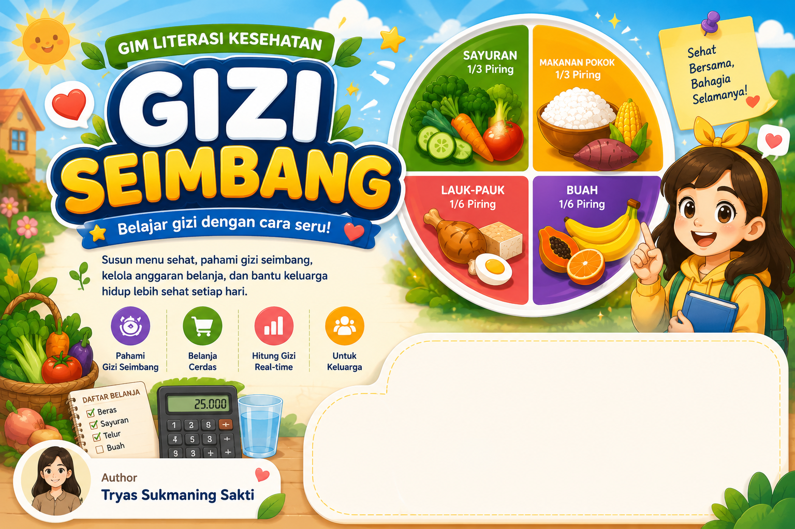

Ada 5 petualangan seru. Selesaikan tantangannya, kumpulkan bintangnya, dan jadilah Ahli Gizi Keluarga!
Selamat, kamu menyelesaikan level ini! Yuk refleksikan apa yang kamu pelajari.
Semua skor, lencana, dan jurnal refleksimu akan dihapus. Tindakan ini tidak bisa dibatalkan.
Setelah bermain, kamu diharapkan mampu melakukan empat hal berikut.
Tryas Sukmaning Sakti
© 2026 Tryas Sukmaning Sakti. Hak cipta dilindungi.
Gim Literasi Kesehatan: Gizi Seimbang — konten pembelajaran untuk
Ruang Murid, Rumah Pendidikan.
⚕️ Gim ini adalah media belajar. Saran gizi di dalamnya bukan pengganti konsultasi dengan dokter atau tenaga gizi.